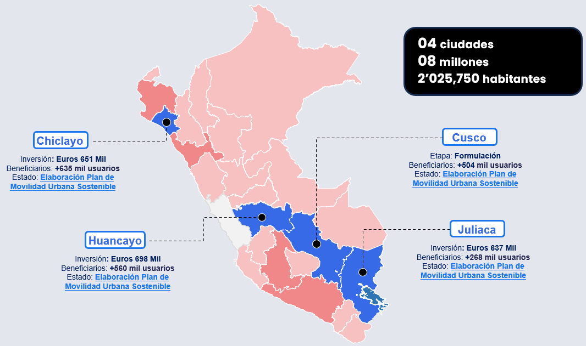
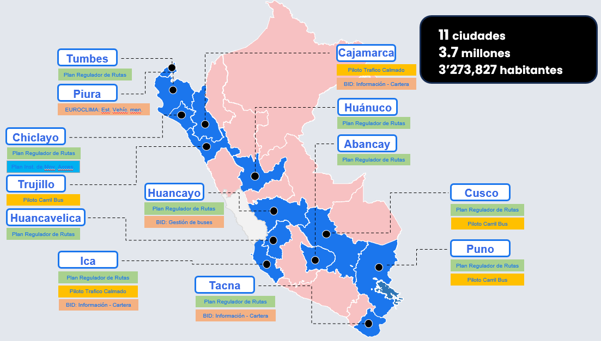
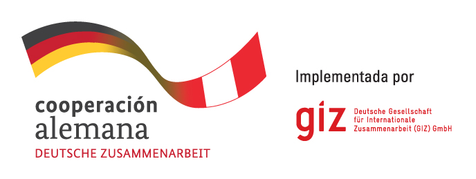
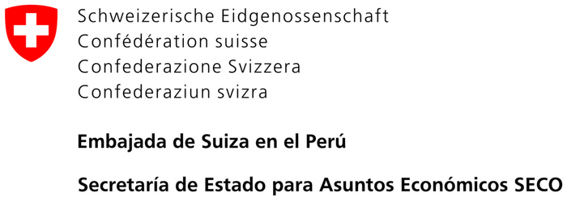
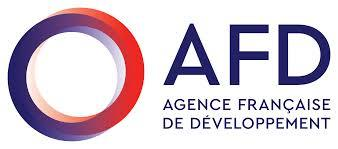
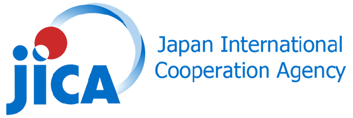
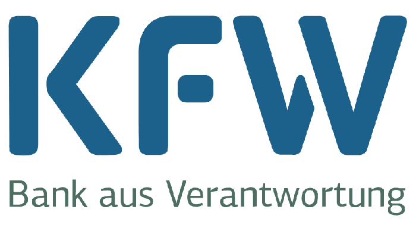
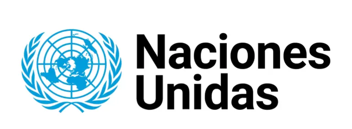
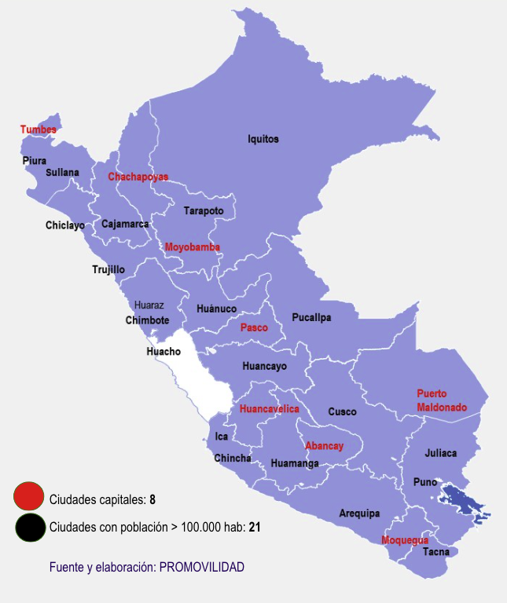
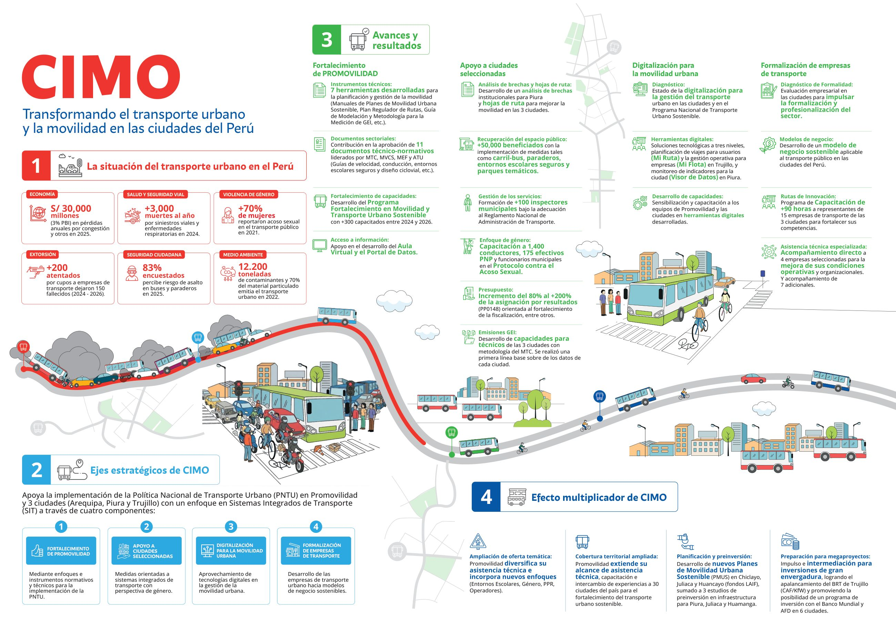

CIMO: apoyo a los gobiernos locales
El apoyo de CIMO a los gobiernos locales para mejorar el transporte urbano y la movilidad en las ciudades del Perú.
Ver en YouTubeOrientado para la construcción de Sistemas Integrados de Transporte en las Ciudades.
Conoce más sobre PROMOVILIDADOptimizar los desplazamientos diarios de la población en las ciudades del ámbito de intervención.
Fortalecer las condiciones de seguridad para todos los usuarios del sistema de transporte.
Con especial atención a las personas usuarias de menores ingresos.
Disminuir gases de efecto invernadero y contaminantes del aire local del sector transporte.
PROMOVILIDAD brinda asistencia técnica y desarrolla Planes de Movilidad Urbana Sostenible en ciudades del Perú, fortaleciendo sus capacidades para un transporte eficiente, accesible y sostenible.








Información general del programa, objetivos y cobertura a nivel nacional.
Promover Sistemas Integrados de Transporte en las ciudades del ámbito de intervención, con un enfoque de movilidad urbana sostenible y de género, bajo estándares de calidad, eficiencia y confiabilidad.
Reducir tiempos de viaje, incrementar la seguridad vial y mejorar el acceso a oportunidades; así como disminuir las emisiones de GEI, elevando la calidad de vida y la competitividad de las ciudades.

Fuente y elaboración: PROMOVILIDAD.
Listado de planes por ciudad.
Listado consolidado de planes para todas las ciudades.
Listado de convenos marcos y específicos por ciudad.
Listado consolidado de convenios marco y específicos para todas las ciudades.
Fuente: Dirección de Inversiones – PROMOVILIDAD. CUI vinculado al portal Invierte.pe del MEF.
Un SIT no es un modo de transporte nuevo: es la forma de lograr que los servicios de transporte público de una ciudad funcionen como un solo sistema. La Ley General de Transporte y Tránsito Terrestre (Ley N° 27181), modificada por el Decreto Legislativo N° 1707, lo define como un sistema de transporte público de personas que articula las distintas modalidades del servicio mediante integración física, operacional y tarifaria, y medios de pago integrados.
Todo lo que presenta este observatorio busca contribuir a ese objetivo: medir la movilidad de las ciudades, asistirlas técnicamente y acompañar el camino hacia un transporte público más ordenado.
Infraestructura con prioridad para el transporte público: paraderos, carriles o vías exclusivas, terminales e intercambios.
Rutas ordenadas y complementarias, operadores formalizados, frecuencias coordinadas y un control común del servicio.
Una política tarifaria común: trasbordos sin pagar de nuevo o con descuento, y tarifas accesibles para todos.
Un sistema de recaudo único e interoperable, con pago electrónico para toda la red.
Una ruta de referencia en etapas, que cada ciudad adapta a su realidad. No hay un único orden: Lima empezó por sus corredores, Cusco por la renovación de la flota, y Trujillo y Arequipa por reestructurar la red de buses (experiencias documentadas por la cooperación técnica AFD–CODATU–Cerema–MTC, 2018).
El SIT nace de una decisión del gobierno local y se sostiene con un equipo técnico estable (un ente gestor) que dé continuidad más allá de los cambios de gestión, en coordinación con el MTC.
Conocer la oferta y la demanda: conteos, encuestas origen–destino, rutas existentes y una línea base de indicadores por ciudad.
Definir la visión de ciudad y los objetivos de corto, mediano y largo plazo que orientarán el SIT y que trascienden los periodos de gobierno.
Empezar por lo más simple y rápido para generar confianza: paraderos oficiales, carriles o vías exclusivas para el transporte público, zonas de tráfico calmado y mapas de rutas.
Racionalizar y reorganizar las rutas (Plan Regulador de Rutas), definir paraderos y tipo de flota, y prever un eje troncal de mayor capacidad para los corredores más cargados.
Definir la tarifa y su integración, verificar el equilibrio financiero y establecer contratos de operación que condicionen parte de la remuneración a la calidad del servicio.
Recaudo único e interoperable, centro de control de tránsito y semáforos, e información en tiempo real para quienes usan el transporte público.
Dialogar con transportistas, taxistas, comerciantes y usuarios; acompañar la reconversión de quienes se ven afectados; y dar seguimiento con indicadores para mejorar de forma continua.
El SIT no es un fin en sí mismo: es una herramienta al servicio de una ciudad más habitable, segura y atractiva para las personas. Por eso su diseño considera cinco capas de la ciudad:
Fuentes: Decreto Legislativo N° 1707 (modifica la Ley N° 27181); Decreto Supremo N° 027-2019-MTC (creación de PROMOVILIDAD); cooperación técnica AFD–CODATU–Cerema–MTC (2018), «¿Cómo implementar un Sistema Integrado de Transporte en las ciudades peruanas?». Contenido preliminar, en revisión.
Aplicaciones desarrolladas por PROMOVILIDAD para el análisis y la planificación de la movilidad urbana.
Estima las emisiones del transporte público por ciudad con la metodología oficial del MTC, a partir de la flota reportada por los gobiernos locales.
Abrir herramientaHerramientas de análisis de movilidad urbana para ciudades intermedias: aforo vehicular y peatonal (AforoCore), análisis de corredores de transporte (BusCore) y visor de red vial y rutas.
Abrir herramientaTransformando el transporte urbano y la movilidad en las ciudades del Perú
CIMO apoya la implementación de la Política Nacional de Transporte Urbano (PNTU) en PROMOVILIDAD y en tres ciudades —Arequipa, Piura y Trujillo— con un enfoque en Sistemas Integrados de Transporte (SIT), a través de cuatro componentes.
Enfoques e instrumentos normativos y técnicos para la implementación de la PNTU.
Medidas orientadas a sistemas integrados de transporte, con perspectiva de género, en Arequipa, Piura y Trujillo.
Aprovechamiento de tecnologías digitales en la gestión de la movilidad urbana.
Desarrollo de las empresas de transporte urbano hacia modelos de negocio sostenibles.
PROMOVILIDAD diversifica su asistencia técnica e incorpora nuevos enfoques (entornos escolares, género, PPR, operadores).
Extiende su alcance de asistencia técnica, capacitación e intercambio de experiencias a 30 ciudades del país.
Nuevos Planes de Movilidad Urbana Sostenible en Chiclayo, Juliaca y Huancayo (fondos LAIF), más 3 estudios de preinversión en infraestructura para Piura, Juliaca y Huamanga.
Impulso e intermediación para inversiones de gran envergadura: apalancamiento del BRT de Trujillo (CAF/KfW) y la posibilidad de un programa de inversión con el Banco Mundial y AFD en 6 ciudades.
Resume en una sola lámina la situación del transporte urbano, los ejes estratégicos de CIMO y los avances y resultados alcanzados. Haz clic en la imagen para verla en grande y recorrerla.

El apoyo de CIMO a los gobiernos locales para mejorar el transporte urbano y la movilidad en las ciudades del Perú.
Ver en YouTubeCooperación técnica de CIMO en la ciudad de Arequipa.
Ver en YouTubeCooperación técnica de CIMO en la ciudad de Trujillo.
Ver en YouTubeFuente: infografía «CIMO – Ciudades en movimiento» (MTC–PROMOVILIDAD, con la cooperación alemana implementada por GIZ y la Embajada de Suiza–SECO).
Novedades y actividades de PROMOVILIDAD.
Repositorio de documentos técnicos para consulta y descarga.